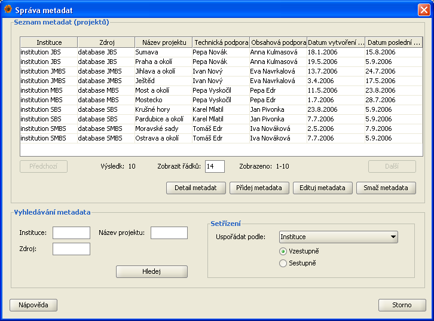

Správa metadat

Správce metadat umožňuje administrátorovi přidávat, editovat a mazat metadata jednotlivých projektů.
Správce metadat otevřete z menu Data/Správa metadat nebo klávesovou zkratkou CTRL + M.
Dialog správce metadat

Dialog pro správu metadat je rozdělen do dvou částí:
- Seznam metadat projektů - zobrazení seznamu metadat existujících projektů podle kriterií zadaných pro vyhledávání a setřízení
- Vyhledávání - zadání požadavků pro vyhledávání a setřízení metadat
Seznam metadat
Po úspěšném vyhledávání je v této části zobrazen seznam vyhledaných metadat projektů. Počet projektů zobrazených v tabulce si můžete sami nastavit přepsáním
hodnoty pro Zobrazit řádků a potvrzením nové hodnoty klávesovým tlačítkem ENTER. V tabulce se přepínáte na další nebo předchozí
seznam uživatelů pomocí tlačítek Předchozí a Následující. Informace o aktuálně zobrazeném seznamu metadat projektů jsou uvedeny v části
pod tabulkou.
Pro práci se záznamem jsou zde k dispozici tlačítka:
Vyhledávání
Správce metadat nábízí administrátorovi možnost vyhledávat podle tří parametrů: instituce, název projektu a zdroj dat. Výsledek může být setřízen
podle názvu instituce, názvu projektu, zdroji dat, jméno osoby pro technickou podporu, jméno osoby pro obsahovou podporu, datumu vytvoření projektu a
datumu poslední modifikace projektu. Pokud nejsou zadány, žadné parametry a omezení budou vyhledány všechny metadata projektů.
Pozor: při vyhledávání jsou rozlišévána velká a malá písmena (case insensitive).
Přidání metadat projektu
Dialog pro přidání metadat
Dialog pro přidání nového projektu můžete otevřít ze Správce metadat. V zobrazeném okně jsou k vyplnění následující položky:
- Instituce - jednoznačný identifikátor instituce, která je vlastníkem originálního datového zdroje.
Tato položka je povinná a bez jejího vyplnění vám aplikace nedovolí metadata přidat.
- Organizace - zkratka organizace.
- Technická podpora - jméno osoby, která se stará o technickou část projektu. Tato položka je povinná.
- Technická podpora - email - kontaktní email na osobu, která se stará o technickou část projektu.
- Technická podpora - adresa - kontaktní adresa na osobu, která se stará o technickou část projektu.
- Obsahová podpora - jméno osoby, které má na starosti obsahovou část projektu. Tato položka je povinná.
- Obsahová podpora - email - kontaktní email na osobu, které má na starosti obsahovou projektu.
- Obsahová podpora - adresa - kontaktní adresa na osobu, které má na starosti obsahovou část projektu.
- Název projektu - krátký název projektu. Název projektu je povinná položka a musí být v rámci databáze jednoznačná.
- Detail k projektu - podrobnější popis projektu.
- Zdroj - jméno nebo kód datového zdroje. Tato položka je povinná.
- Basis - informace o tom, co dané záznamy popisují (preservedSpecimen, ...).
- Poznámka - poznámka k projektu.
- Datum vytvoření projektu - datum a čas, kdy byl projekt vytvořen. Tato položka je povinná.
- Datum poslední modifikace projektu - datum a čas, kdy v projektu byly záznamy naposled modifikovány, vloženy nebo smazány.
Editace uživatele
Dialog pro editaci metadat existujícího projektu otevřete ze Správce metadat. Nezapomeňte, že pro otevření dialogu musíte mít označený projekt,
k jehož matadata se chystáte editovat. Vzhled edit dialogu je téměř totožný s add dialogem. Povinné položky jsou: Instituce, jméno osoby pro Technickou podporu,
jméno osoby pro Obsahovou podporu, Název projektu a Zdroj dat.
Needitovatelené položky jsou:
- Datum vytvoření projektu - datum a čas informující o vytvoření uživatele. Needitovatelná položka.
- Datum poslední modifikace projektu - datum a čas informující o zrušení přístupu uživatele do aplikace. Needitovatelná položka.
Informace o změnách provedených v jednolivých metadatech může administrátor dohledat v dialogu celkové historie,
kde může využít i možnosti návratu k dřívějším hodnotám.
Detailní metadata projektu
Dialog zobrazující detailní informaci o metadatech projektu. Pro otevření tohoto dialogu je nutné
označit požadovaný projekt. Dialog je téměř totožný s edit dialogem. Všechny položky jsou needitovatelné, mají jen
informační charakter.
Smazání metadat projektu
Pro smazání metadat příslušného projektu se použije tlačítko Smaž metadata ve správci metadat. Před stisknutím tohoto tlačítka je nutné
označi požadované metadata. Po stisku tohoto tlačítka bude uživatel informován o operaci, kterou se chystá provést. Potvrzením
této operace budou metadata smazány.
Obnovení smazaných metadat může administrátor prostřednicvím dialogu pro sledování celkové historie
nálezových dat.